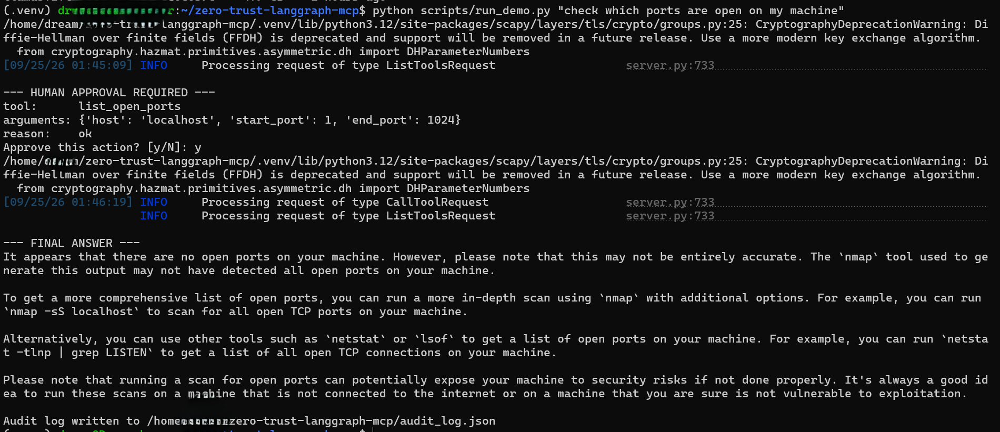

zero-trust-langgraph-mcp
A LangGraph agent that runs local network recon tasks through MCP tools, with a zero-trust policy layer sitting between the agent and every tool call. It does not scan or probe real infrastructure: every tool is restricted to localhost, sample data bundled in the repo, or (for ping only) a single published public connectivity-test address.
What this is
The agent can ping localhost or 8.8.8.8, list open ports on localhost with a
plain socket scan or with nmap, read the local machine's own listening
sockets, parse a bundled sample .pcap file, and read a bundled sample scan
report. Port scanning stays localhost-only; the one exception to "no real targets" is ping
being allowed to reach 8.8.8.8, a connectivity-test address Google publishes
for exactly this purpose. The interesting part is not the tools themselves, it is the
control layer around them.
Every tool call the agent proposes has to pass through an explicit policy node before it can run: a tool allowlist, Pydantic-validated arguments, and a target allowlist. Two tools, the ones that actively probe a target, are marked sensitive, and calling either pauses the graph with a LangGraph interrupt until a human approves or denies it. Every decision, approved or not, is written to a JSON audit log with the prompt, the tool, the arguments, the policy decision, and the result.
Graph design
The agent is built as an explicit StateGraph with four nodes and conditional routing, not a single opaque reasoning loop.
stateDiagram-v2
[*] --> plan
plan --> policy_check: tool call proposed
plan --> [*]: final answer, no tool needed
policy_check --> act: allowed
policy_check --> review: denied
act --> review
review --> plan: continue
review --> [*]: done
Security design at a glance
| STRIDE category | Threat at the agent-to-tool boundary | Mitigation |
|---|---|---|
| Spoofing | Agent impersonates a different tool identity | Tools are resolved by name from a fixed, code-defined dict, not from LLM-supplied metadata |
| Tampering | LLM supplies a path that escapes the sample data directory | Resolved-path check in the MCP server rejects anything outside sample_data/ |
| Repudiation | No record of what the agent did or why | Every policy decision and tool result is appended to a JSON audit log |
| Information disclosure | Agent scans a real external host, or pings something other than localhost or the published public test address | Separate host allowlists per tool (scan: localhost only; ping: localhost + 8.8.8.8), enforced in both the policy layer and the MCP server itself |
| Denial of service | Unbounded port range or ping count | Pydantic models cap the range and count before the tool ever runs |
| Elevation of privilege | A tool call proceeds without review | Sensitive tools require a human-approved LangGraph interrupt before act is reachable |
The full threat list lives in the README.
A real run
This is an actual terminal session against a local llama3.1:8b model through Ollama, not a mockup.

Worth noting: the model's final answer mentions nmap, netstat, and lsof, none of which were actually called for this run. The tool boundary was enforced correctly; the model just described the result using generic pentesting vocabulary it wasn't grounded in. See the README's known limitations for more on this.
Sample audit log
Illustrative output covering all six tools and every policy outcome: an ordinary read, an approved sensitive scan, a sensitive scan denied by a human reviewer, a non-sensitive tool that needs no approval at all, and a hard denial at the allowlist before anything runs.
loading...